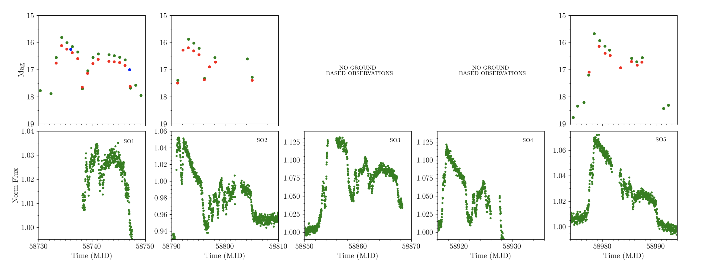
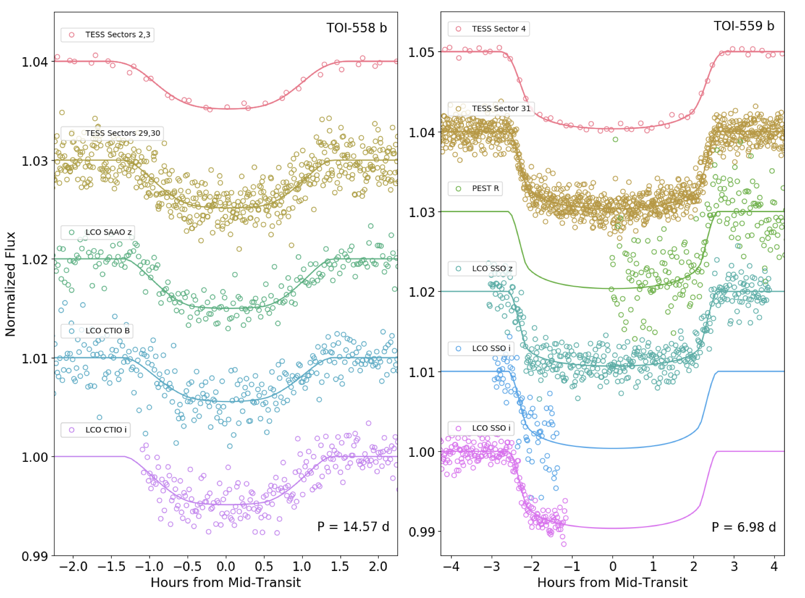
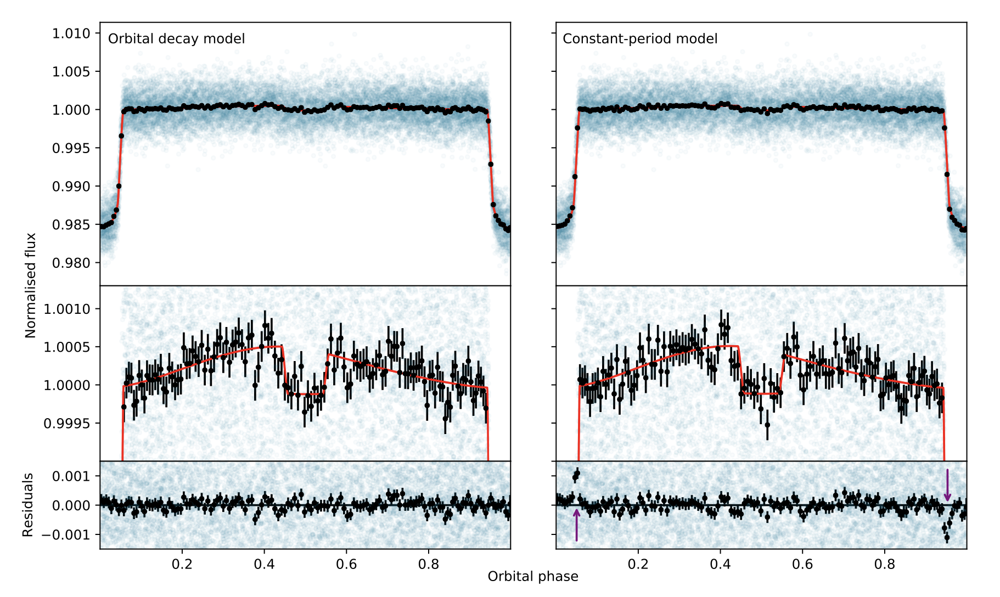

Welcome TESS followers to this weeks news bulletin! This week we present three papers from the archive, enjoy!
Evidence that short period AM CVn systems are diverse in outburst behaviour (Duffy et. al., 2021):
In this paper the authors have examined 15 years of photometric data for eight AM CVn systems. These are a rare kind of cataclysmic variable in which a white dwarf accretes hydrogen poor material from a compact donor star.
Data are collected from the GOTO, ZTF, Pan-STARRS, ASAS-SN and Catalina all-sky surveys and amateur observations collated by the AAVSO. The eight systems have orbital periods from 22.5 - 26.8 days. Using these data the authors find evidence that the AM CVn systems have a similar diversity of long term optical properties as hydrogen accreting dwarf novae. AM CVn systems in the disc instability region are now thought of as a non homogenous group, as the members can exhibit behavior akin to Z Cam systems (long super outbursts and standstills), SU UMa systems (regular, shorter super outbursts), or even and nova-like systems (only in a high state).
TESS data was used by the authors for the KL Dra system, and its evaluation provided the first ever detection of a normal outburst appearing as a precursor to super outbursts in an AM CVn system. Please read the paper for more information on these fascinating objects.
Two Massive Jupiters in Eccentric Orbits from the TESS Full Frame Images (Ikwut-Ukwa et. al., 20211):
The discovery of two short period massive giant planets by TESS are presented in this paper. Each system, TOI-558 and TOI-559, were identified using the 30-minute cadence Full Frame Images. The systems were confirmed via ground-based photometric and spectroscopic follow-up observations from the TFOP working group.
TOI-558 b transits an F-dwarf star with a mass of 1.349 M⊙, a radius of 1.496 R⊙, an effective temperature of 6466 K, an age of 1.79 Gyr. The planet itself has an orbital period of 14.574 days, mass of 3.61 MJ, radius of 1.086 RJ,, and an eccentricity of 0.300.
TOI-559 b transits a G-dwarf star with a mass of 1.026 M⊙, a radius of 1.233 R⊙, an effective temperature of 5925 K, and an age of 1.79 Gyr. The planet has an eccentricity of 0.151, with an orbit of 6.984-days, a mass of 6.01 MJ, and a radius of 1.091 RJ. The spectroscopic follow-up of TOI-559 also reveals a long-term radial velocity trend, indicating a long-period companion.
The eccentricity measured for each system suggests that these planets migrated to their current location through dynamical interactions. The authors then go on to analyzed the known mass distribution of hot Jupiters, but find no significant evidence for multiple populations.
Phase curve and variability analysis of WASP-12b using TESS photometry (Owens et. al., 2021)
TESS sector 20 data is examined for the ultra-hot Jupiter, WASP-12b. From the photometric data the phase curve is extracted and planet's atmospheric properties examined. The amplitude of the phase curve is determined as 549 ppm, and a secondary eclipse depth of 609 ppm is found. The peak of the phase curve is also found to be shifted by 0.049 in phase. This shift implies that the brightest spot in the atmosphere is shifted from the substellar point towards the planet's evening terminator.
Assuming zero albedo, the eclipse depth infers a day-side brightness temperature of 3128 K. No significant detection of flux from the night-side is found at 60 ppm, implying a night-side brightness temperature of < 2529 K. There is no significant variability in the light from the planet detected over the 27 day sector.

Fig 1. Taken from Duffy et. al., (2021). Top panels: ZTF g and r band, in green and red, and GOTO, in blue, data showing SO in KL Dra. Bottom panels: TESS data taken contemporaneously showing each of these SO and the immediately proceeding normal outburst. No ground based data is available for sector 3 and sector 4 as KL Dra was too close to the Sun at these times.

Fig 2. Taken from Ikwut-Ukwa et. al., (2021). The phase-folded transit light curves for (left) TOI-558 and (right) TOI-559 from TESS and the TFOP working group. The solid colored lines correspond to the best-fit model from our global fit.

Fig 3. Taken from Owens et. al., (2021). The phase curve of WASP-12b as observed by TESS. Unbinned data plotted in blue, and points in black represent 100-point bins and associated uncertainties. Left: The decaying ephermeris model used here is outlined by Yee et al. (2020). Right: Using a non-decaying, constant-period orbit produces very notable artifacts (purple arrows) in the residuals. The phase curve is best fit with a decaying ephemeris, strongly indicating that WASP-12b’s orbit is decaying.